Thryve
A gamified health app for users who don't habitually track their health, developed as a working React Native build.
- Role
- Sole product designer, researcher and developer
- Responsibilities
- User research, brand identity, UX/UI design, 3D modelling, front-end development
- Timeline
- 2025, MSc final project
- Tools
- Google Forms, Balsamiq, Figma, React Native, Appwrite, After Effects, Blender
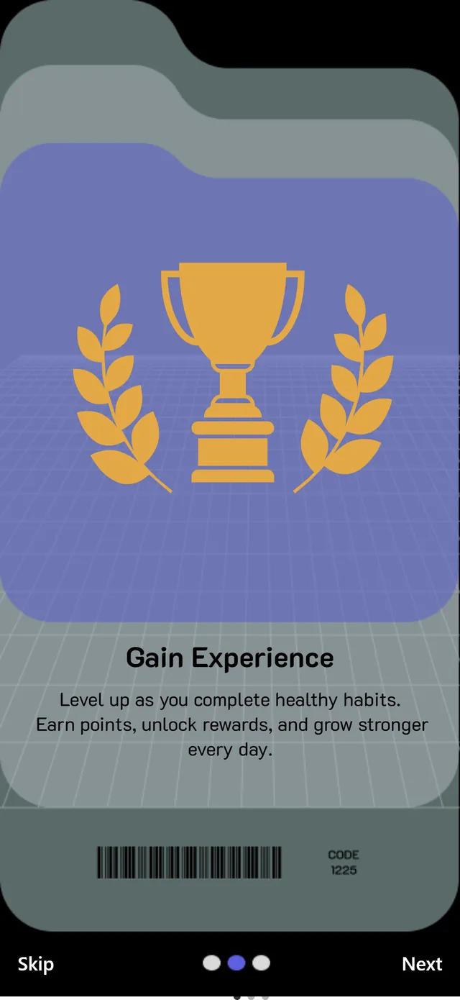
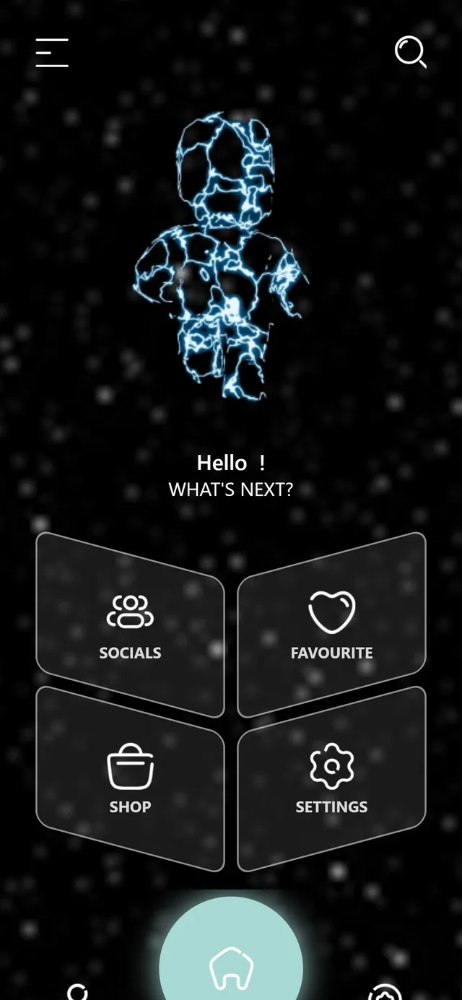

Overview
Most health apps are designed for users who are already motivated. In a survey of 30 respondents, 22 didn't identify as habitual trackers, and 9 of those used no health tool at all. Thryve turns small, everyday health actions into visible progress, through badges and an avatar that evolve with the user.
I defined the brand principles in a manifesto before designing, then developed the app in React Native so it would behave like a real product, with account creation, authentication and animation. Design feedback showed the first badge set contradicted those principles, so I redesigned it around a robot character modelled in Blender. A review of the final build then showed that the core engagement loop never reached the home screen.
Discovery research
Research suggests users abandon health apps mainly because a feature they need is missing or nothing sustains their motivation (Mustafa et al., 2022). I analysed three market leaders and found each one favours users who are already committed.
I then surveyed 30 respondents about their habits, tools and motivations. 70% were aged 18 to 24, and 60% described themselves as moderately active.
- StravaBuilt around competition: segments, leaderboards and personal bests.
- FitbitIts most engaging features depend on owning the device.
- Pokémon GoEncourages walking, but health is a by-product of play rather than the goal.
Less motivated users don't need more data. They need a small goal they can complete today and a result they can see.
Which features would you find most motivating? (n=30, up to three)
Competitive features such as leaderboards ranked near the bottom.
Two personas, two starting points
I synthesised the responses into two personas: a passive user who wants to start exercising but doesn't know where to begin, and an active user who already trains but can't see her progress quickly enough. Each persona's motivation chart uses the top answers to the survey's motivation question.
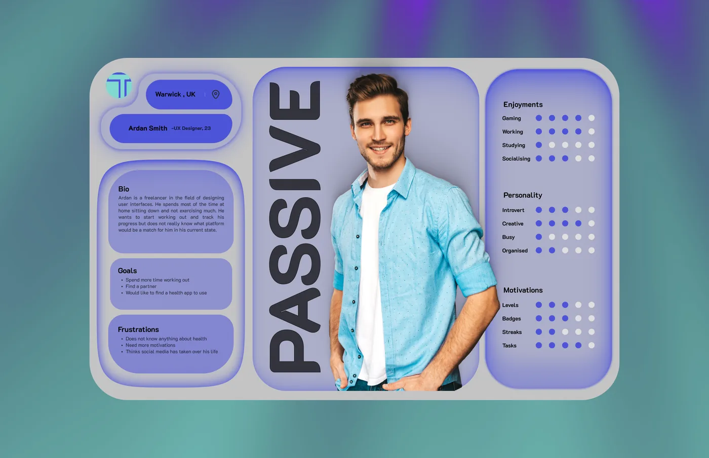
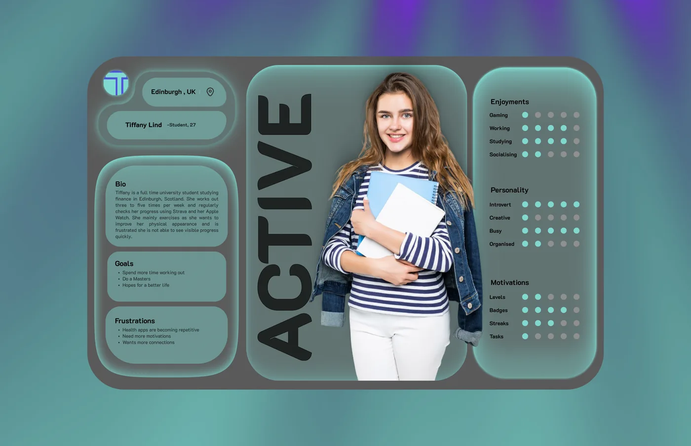
Brand principles
While the concept was still open, my supervisor suggested writing brand guidelines first. The manifesto settled the biggest question: Thryve would be an app with game elements, not a game. Its principles became the standard I later measured my own work against.
The structure drew on the Korean webtoon Solo Leveling, in which the hero grows stronger through small daily quests, combined with motivation research such as self-determination theory and the distinction between playful and goal-driven game design.
- We believe in the power of play to transform lives.A healthy lifestyle should never feel like a punishment or a chore.
- Progress without shame, growth without guilt.Users aren't punished for resting; every setback is a chance to restart.
- Play for progression, not perfection.A stretch, a glass of water or a marathon: every effort counts.
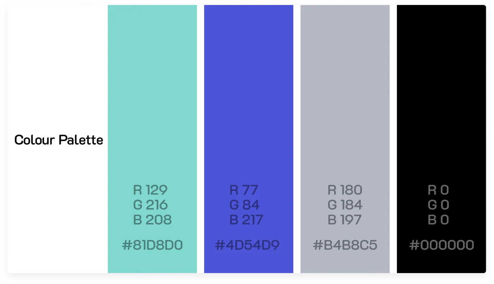
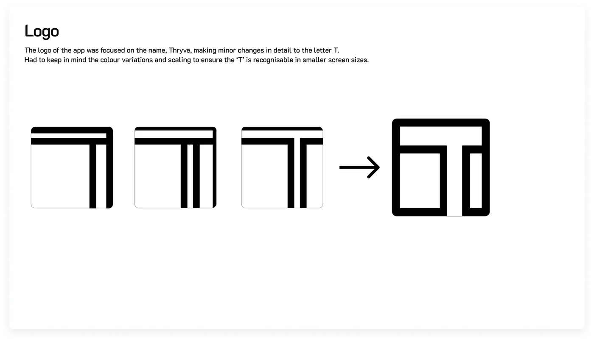
Building a working app
After mapping the user flow and wireframing in Balsamiq, I chose to build the app rather than stop at a Figma prototype, which can't accept real text input and so always feels like a demo. Native iOS development requires a Mac, which I didn't have, so I chose React Native and learned it during the project.
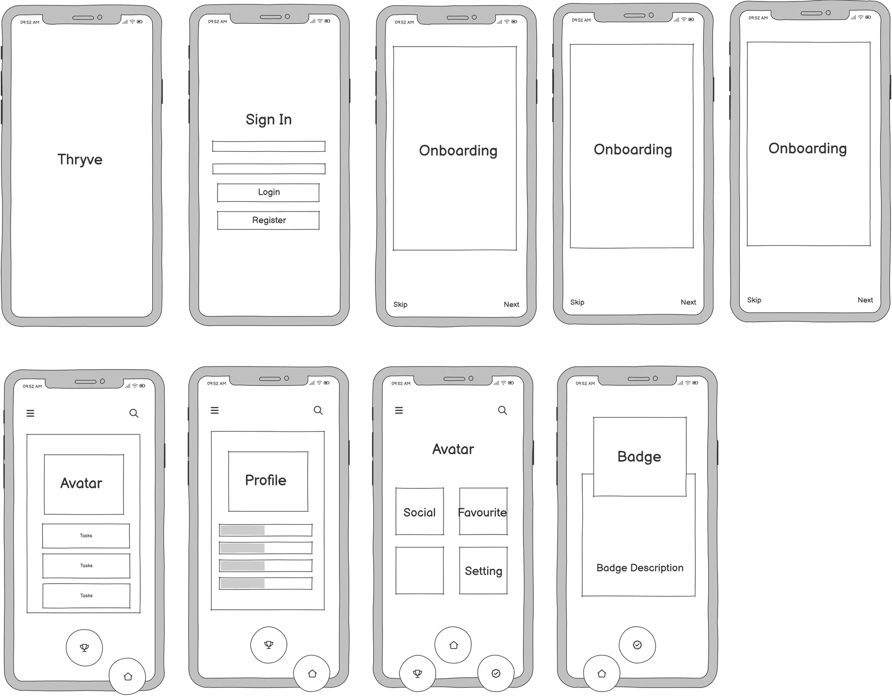
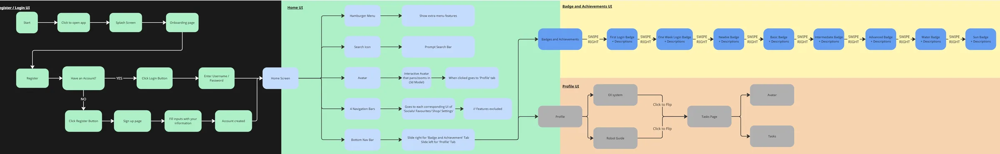
- Real accountsRegistration and authentication connect to an Appwrite database, so new users are created and returning users keep their data.
- Onboarding built on researchThe first question offers the survey's top three reasons for staying healthy: physical appearance (70%), energy (60%) and mental wellbeing (57%).
- Motion from my own pipelineI animated the splash screen in After Effects and embedded it as video. Onboarding animations use Lottie files.
- Technical trade-offsExpo Go couldn't preview 3D assets on a device. The newer video package couldn't hide its playback controls, so I reverted to the legacy library. An unreliable onboarding slider led me to remove its progress indicators.
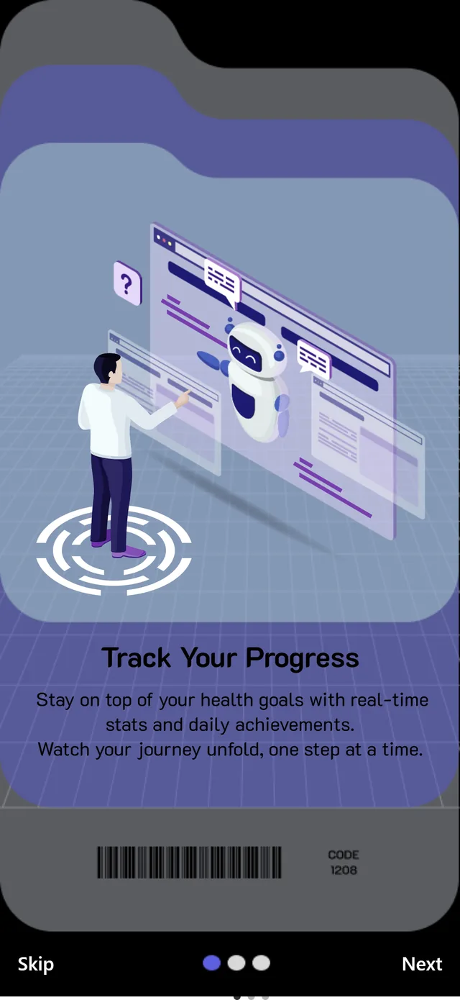
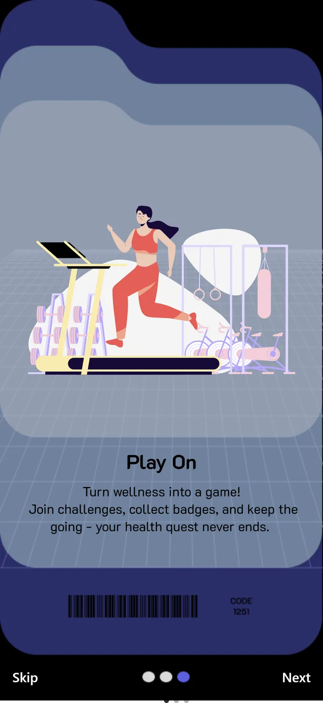
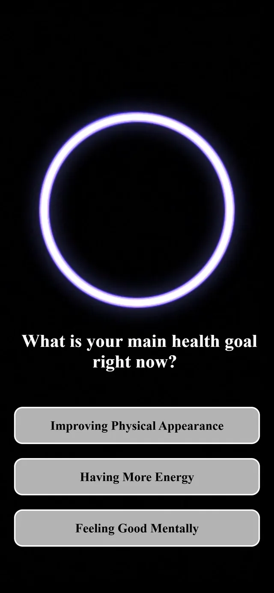

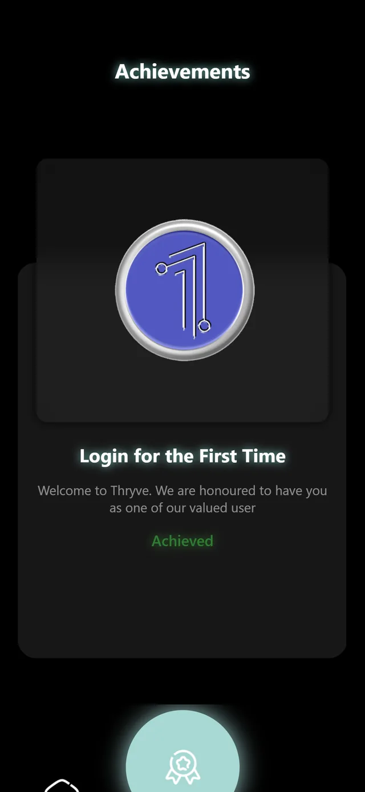
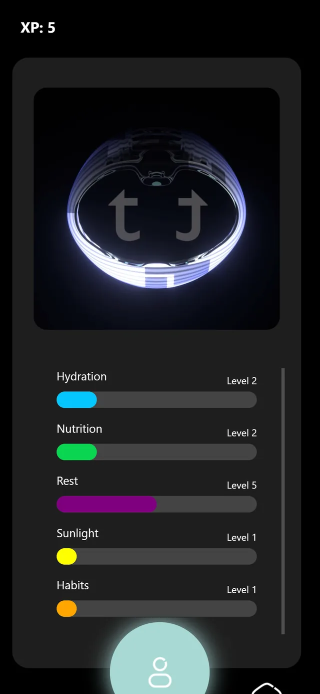
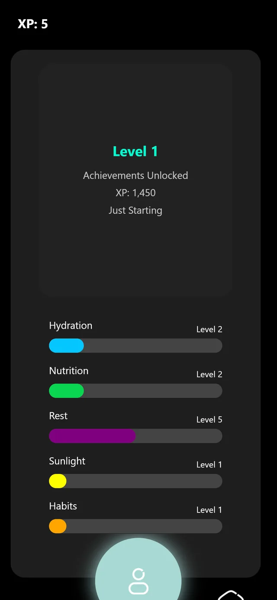
Screens from the React Native build.
Badges: feedback that changed the system
The first badge set used emblem layouts with sigils and wings. In the first round of design feedback, participants described it as militaristic, directly at odds with a manifesto built on play and inclusivity.
I sculpted a robot character in Blender and rebuilt the system around it.
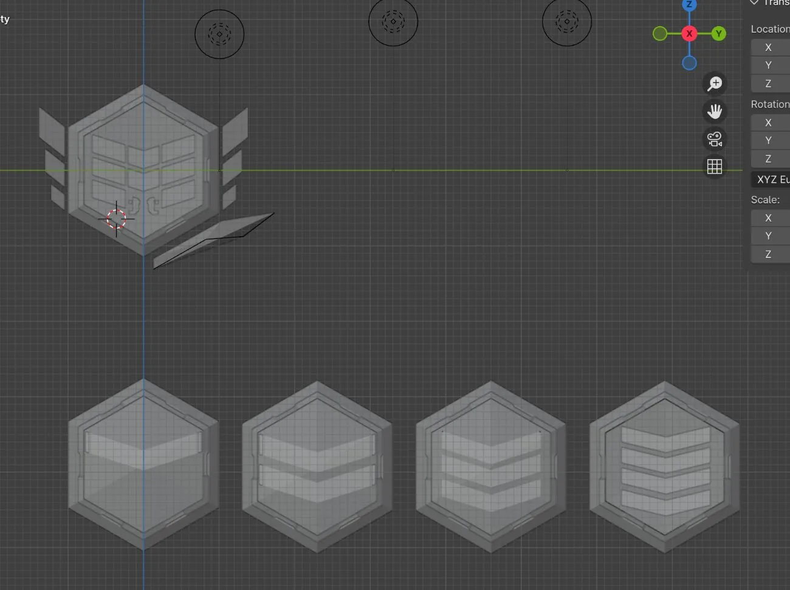
A rank you can read without numbers
The robot matures as the user levels up, and the shape behind it gains a corner at each rank.
Before
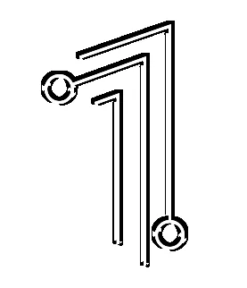
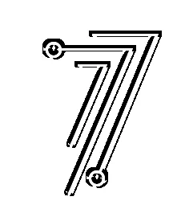
After
Second round: bringing the outliers in
The robot badges were well received in the second feedback round, but participants felt the first-login and seven-day badges looked disconnected from the rest. I redesigned both in the same visual language.
Trading real-time 3D for video
The avatar followed the same path: a realistic human model clashed with the playful tone, so I moved to a stylised humanoid. I intended users to interact with it in real time, but React Native loads only .glb files directly, a format that discards applied textures and modifiers. The alternative libraries needed more time than the project allowed.
I rendered the avatars as video and embedded them in the build, preserving the intended visual quality across both platforms at the cost of interactivity.
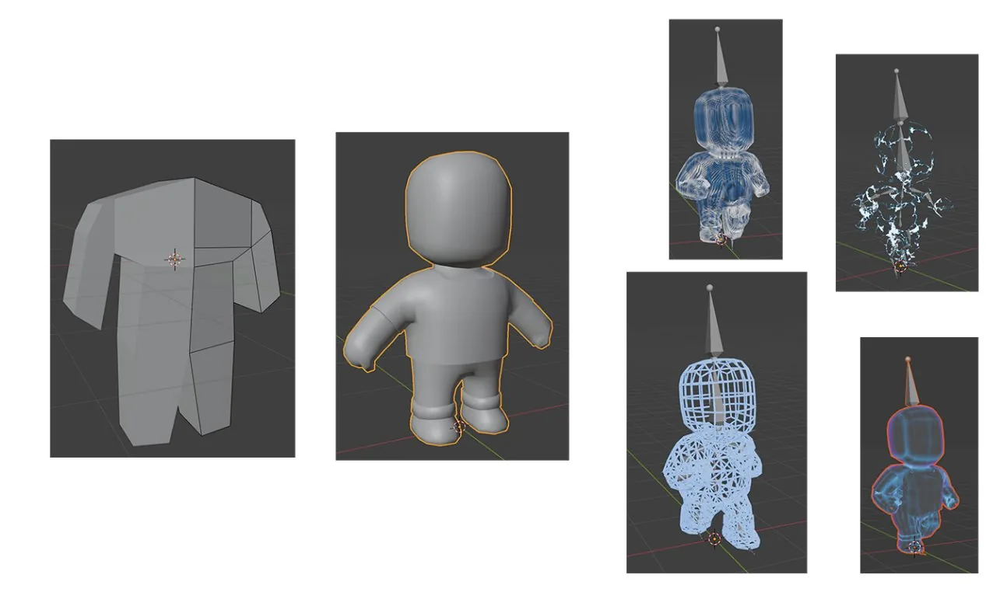
Design review of the final build
Both feedback rounds focused on visual design, and no participant completed tasks in the app. Reviewing the final build myself surfaced three usability issues.
Home: no clear next action
- 1The screen asks "What's next?" without answering, and the greeting leaves a gap where the user's name should be.
- 2Four menu tiles take up the space. The core loop, completing a small task and watching the robot grow, doesn't appear on the first screen.
Profile: inconsistent progress data
- 1The header shows XP 5.
- 2The level card shows XP 1,450 at Level 1.
- 3Rest is already at Level 5, with no explanation of how levels are earned. The feature meant to make growth visible makes it confusing, and the planned avatar-upgrade tab remained a Figma concept.
Achievements: no sense of the whole
- 1Each badge fills the screen, so users can't see how many they've earned, what remains or what to aim for next. Half of respondents named badges as the most motivating feature, and this view doesn't build on that.
Custom avatars ranked last in the survey (13%), yet I made the avatar central.
Next iteration
These are design directions that haven't yet been built or tested, in priority order: the home screen carries the core loop, so it comes first.
- HomeThree daily quests at the top, tailored to onboarding answers. One tap completes a quest, and the robot reacts as XP rises. After a missed day: "Starting again is fine."Metric: time to first completed quest, and completion rate
- ProfileOne XP value throughout, with a bar showing progress to the next level. Category levels become secondary.Metric: users' accuracy when explaining their own level
- AchievementsA grid of every badge, with locked badges showing what's needed to earn them.Metric: success rate when finding the next badge's requirement
- QuestionsA step counter (1 of 2), a smaller decorative ring, and a preview of the quests each answer unlocks.Metric: question completion rate
For a live product, I'd also track seven-day retention and quests completed per day.
Key learnings
- Users notice when design drifts from principlesThe manifesto said "play, not competition", yet the first badges looked military. Design feedback caught the mismatch immediately.
- Opinions aren't usability testingFeedback on appearance said nothing about whether the app worked. Task-based testing, as in BudgetBills, is what this project lacked.
- Put the core loop on the first screenAdditional features add little if the primary action isn't where users land.
- Building surfaces real constraintsDeveloping the app exposed limits, such as the .glb format, that a prototype would have hidden. I now consider implementation while designing.